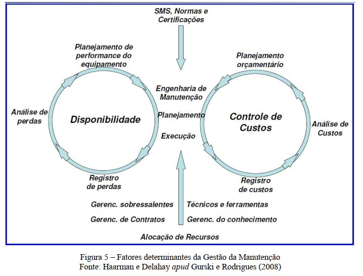
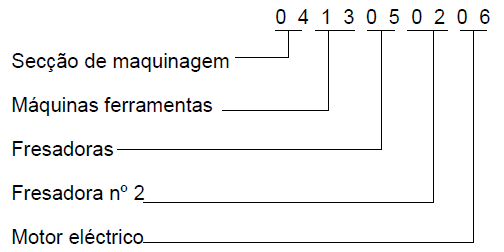
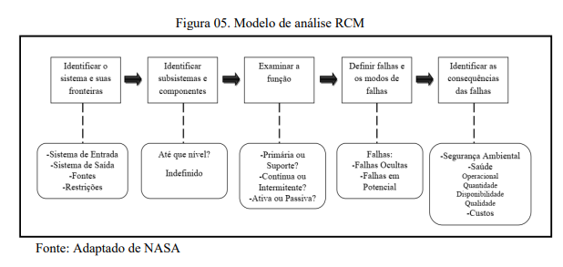
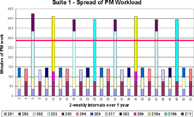
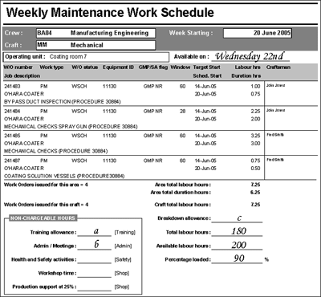
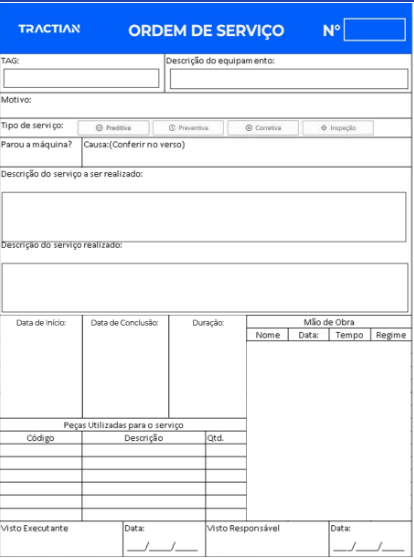
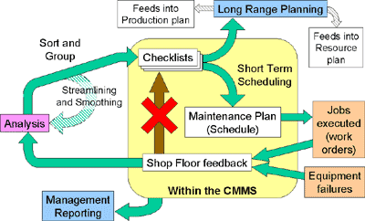
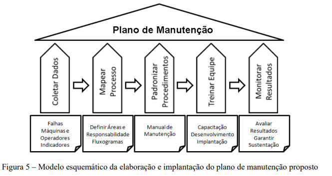

O que o estudante deve conseguir fazer
Identificar um equipamento, justificar prioridades, escrever tarefas claras, estimar recursos e custos, montar um cronograma e acompanhar a execução com ordens de serviço e indicadores.
A aula complementa a MCC: a análise técnica fundamenta as escolhas e o plano organiza sua execução.
Finalidade e níveis de planejamento
Um plano transforma necessidades de manutenção em trabalho organizado.
O plano define o que fazer, em qual equipamento, por quê, quando, por quem, com quais recursos e como registrar o resultado. A finalidade é preservar o funcionamento requerido e controlar perdas e custos.
| Nível | Papel |
|---|---|
| Política | Diretrizes gerais da organização para a manutenção. |
| Estratégia | Escolha das abordagens e prioridades compatíveis com os objetivos. |
| Programa | Conjunto de requisitos e tarefas para um sistema ou centro de trabalho. |
| Checklist | Lista estruturada de verificações e atividades. |
| Cronograma de curto prazo | Trabalhos selecionados e distribuídos para um período e uma equipe. |
A engenharia de manutenção relaciona disponibilidade e controle de custos. Peças, contratos, qualificação e informações sustentam essas decisões.

Inventário e codificação
Para controlar um equipamento, é preciso identificá-lo sem ambiguidade.
O inventário reúne os ativos sujeitos ao controle da manutenção. Cada equipamento recebe uma ficha ou um registro no sistema de gestão.
- Identificação: código, função, fabricante, modelo e número de série.
- Contexto: localização, condições de operação e componentes substituíveis.
- Características: dados técnicos, dimensões e peso, quando relevantes.
- Aquisição: data, processo e preço de compra.
A codificação organiza os itens do geral ao particular: instalação, sistema, equipamento, conjunto e componente. O código facilita localizar documentos, ordens de serviço e histórico.

Itens significativos e estratégia
As consequências das falhas determinam a prioridade.
Os slides classificam como Itens Significativos para Manutenção (ISM) aqueles cuja falha afeta a segurança, produz impacto econômico ou operacional importante, ou permanece oculta na operação normal.
| Situação | Implicação para o plano |
|---|---|
| Consequência para segurança ou bens | A análise precisa justificar medidas adequadas às consequências. |
| Impacto econômico ou operacional | Priorizar continuidade e perdas, com critérios claros. |
| Falha oculta | Prever verificação funcional quando aplicável. |
| Degradação detectável | Avaliar monitoramento por condição. |
| Falha de baixo impacto | Avaliar a viabilidade de uma corretiva planejada. |
A análise centrada na confiabilidade considera fronteiras do sistema, funções, modos de falha e consequências. A estratégia pode combinar preventiva por tempo ou uso, preditiva, detectiva e corretiva.

Tarefas, critérios e periodicidade
Uma tarefa deve produzir uma decisão ou um resultado verificável.
O checklist deriva da análise técnica, das recomendações do fabricante e da experiência registrada. Pode organizar tarefas de mecânica, lubrificação, elétrica e segurança.
| Campo | O que precisa ficar claro |
|---|---|
| Ação | Verificar, medir, limpar, ajustar ou substituir o quê. |
| Método | Qual procedimento e documento orientam a atividade. |
| Critério | Qual condição é aceitável e como registrar desvios. |
| Periodicidade | Tempo de calendário, horas de operação, ciclos ou condição. |
| Responsável | Quem executa e quem avalia ou libera o resultado. |
| Registro | Medições, observações, materiais usados e encaminhamentos. |
Periodicidade e tolerância precisam de fundamento. O agrupamento de tarefas facilita a programação, desde que preserve os requisitos do equipamento e o controle de risco. Os intervalos devem ser revistos com histórico e resultados.
Os valores de temperatura, consumo e horas dos exemplos de injeção e refrigeração dos slides pertencem àqueles casos. Não devem ser transferidos automaticamente a outro equipamento.
Recursos e custos
A programação depende de meios disponíveis, além de uma data no calendário.
- Pessoas: quantidade, qualificação, tempo e responsabilidades.
- Materiais: sobressalentes, consumíveis e ferramentas.
- Documentos: manuais, desenhos, esquemas e procedimentos.
- Logística: acesso, janela operacional e condições para executar o trabalho.
A estimativa de custos reúne mão de obra, materiais e serviços. Na comparação entre alternativas, as perdas de produção e o risco de indisponibilidade também podem importar.
HH significa horas-pessoa. Dois técnicos trabalhando juntos por 1,5 hora consomem 3 HH. A duração da parada continua sendo 1,5 hora se toda a intervenção ocorrer nessa janela.
Ver o cálculo desse exercício
Contrato atual: 5 × 130.000 = R$ 650.000. Alternativo: 5 × 42.000 + 25.000 × n = R$ 210.000 + R$ 25.000 × n.
Para o alternativo custar menos: n < (650.000 − 210.000)/25.000 = 17,6. Portanto, até 17 peças ao longo dos cinco anos. Com 17 peças, o custo é R$ 635.000 e a economia é R$ 15.000. Com 18, sobe para R$ 660.000.
Hipóteses do exercício: preços constantes e somente os custos informados. Não se consideram desconto financeiro, inflação ou alteração tecnológica.
Cronograma e capacidade de trabalho
A carga programada deve caber na capacidade disponível.
O plano de curto prazo combina checklists periódicos e outras ordens de serviço. A equipe precisa compatibilizar prioridades, recursos e janelas da operação.
- Estimar duração e HH por atividade.
- Comparar a carga à capacidade de cada especialidade.
- Distribuir trabalhos para evitar picos desnecessários.
- Separar capacidade já comprometida de capacidade disponível.
- Tratar urgências e registrar o que foi reprogramado.


Ordem de serviço e execução
A OS liga o trabalho planejado ao histórico do equipamento.
A ordem de serviço identifica o equipamento, descreve o trabalho, organiza responsabilidades e registra a execução. O modelo anexado inclui solicitante, horários, causa, tipo de manutenção, prioridade, peças e verificações após a intervenção.
| Antes | Durante e depois |
|---|---|
| Identificar TAG, atividade, prioridade e equipe. | Registrar condição encontrada e serviço realizado. |
| Confirmar recursos, procedimento e janela. | Registrar início, término, HH e parada. |
| Definir condições para execução e liberação. | Registrar materiais, desvios e resultado dos testes. |
| Organizar os controles aplicáveis. | Encerrar a OS e encaminhar pendências. |
Uma tarefa marcada como concluída precisa de evidência suficiente: observação, medição, serviço executado ou justificativa de não aplicação.

Indicadores e realimentação
Os registros devem servir para revisar o plano.
Após a execução, o PCM (Planejamento e Controle da Manutenção) compara programado e realizado, acompanha falhas e propõe ajustes. O material destaca tempo de atendimento, intervalo entre reparos, rentabilidade por máquina e cumprimento do cronograma.
| Indicador | Cálculo ou leitura |
|---|---|
| Cumprimento do cronograma | OS programadas concluídas no prazo ÷ OS programadas com vencimento no período × 100. |
| MTBF | Tempo total de operação ÷ número de falhas, para o conjunto e período definidos. |
| Carga e capacidade | HH programadas comparadas às HH disponíveis por especialidade. |
| Custos e perdas | Acompanhar gastos e impacto das paradas, com critérios consistentes. |
As definições de falha, tempo de operação e período precisam permanecer consistentes para comparar resultados. A ausência de falhas no período não autoriza uma divisão por zero para calcular o MTBF.
Perguntas após uma falha
O que quebrou? Como e por quê? A rotina existente pretendia evitar essa ocorrência? A tarefa foi executada e era adequada? É preciso mudar método, frequência, recursos ou projeto?


Motor de translação de uma ponte rolante
Como transformar o modelo da planilha em um plano acompanhado por OS.
O equipamento e a identificação vêm da planilha anexada. Frequências adicionais, equipe, tempos, custos e resultados abaixo são hipóteses didáticas. O exemplo mostra o planejamento e o registro do trabalho.
| Campo do cabeçalho | Preenchimento |
|---|---|
| Equipamento | Ponte rolante |
| Conjunto | Translação do carro |
| Componente | Motor elétrico |
| Descrição do plano | Preventiva do motor de translação do carro |
| Periodicidade do pacote | Bimestral, interpretando o código 2M do modelo |
| Local / TAG | PR01-TLC-ME01 |
| Número do plano | 001 |
| Categoria | Elétrica |
| Função | Movimentar o carro dentro do desempenho especificado para a operação. |
| Justificativa | Falha do motor pode interromper a movimentação e a operação da ponte. |
1. Pacote de tarefas
As inspeções externas e a análise do histórico complementam o pacote bimestral. As intervenções e os ensaios seguem documentação aprovada e equipe qualificada.
| ID | Tarefa e evidência | Frequência inicial | Equipe / duração | Carga |
|---|---|---|---|---|
| T01 | Observar condição externa e registrar ruído, sujeira ou desvios, em condição prevista no procedimento. | Semanal | 1 pessoa / 0,25 h | 0,25 HH |
| T02 | Revisar ocorrências e decidir se há OS ou avaliação técnica pendente. | Mensal | 1 pessoa / 0,25 h | 0,25 HH |
| T03 | Confirmar condições de intervenção e registrar a autorização do pacote. | Bimestral | 2 técnicos / 0,25 h | 0,50 HH |
| T04 | Executar limpeza e inspeção previstas para motor e conexões. Registrar achados. | Bimestral | 2 técnicos / 0,75 h | 1,50 HH |
| T05 | Realizar verificações ou ensaios aplicáveis e registrar resultados frente aos critérios aprovados. | Bimestral | 2 técnicos / 0,25 h | 0,50 HH |
| T06 | Concluir verificações, registrar testes e liberação ou pendências. | Bimestral | 2 técnicos / 0,25 h | 0,50 HH |
Pacote bimestral T03–T06: 1,5 hora de duração, com dois técnicos, totalizando 3 HH. Na semana em que também vencem T01 e T02, a carga total é 3,5 HH.
2. Recursos e orçamento da semana
- Dois técnicos habilitados para o pacote e responsáveis definidos para a inspeção e a análise.
- Manual, procedimento, registros anteriores e instrumentos previstos para as tarefas.
- Materiais compatíveis com o equipamento e janela combinada com a operação.
R$ 120/HH é a taxa didática de mão de obra. R$ 180 é a estimativa de materiais e consumíveis. O orçamento de R$ 600 não inclui eventual perda de produção nem peças adicionais.
3. Programação semanal
| Dia | Trabalho | HH previstas |
|---|---|---|
| Segunda | T01: inspeção externa | 0,25 |
| Terça | T02: revisão de histórico | 0,25 |
| Quarta | T03 a T06: pacote na janela das 14h às 15h30 | 3,00 |
| Total | Carga para este plano na semana | 3,50 |
Se há 5 HH disponíveis para essas tarefas na semana, a utilização prevista é 3,5 ÷ 5 = 70%, restando 1,5 HH. A equipe também precisa estar disponível simultaneamente na janela de quarta-feira.
4. Registro de uma OS preenchida
| Campo | Exemplo didático |
|---|---|
| OS | OS-001-01, vinculada ao plano 001 |
| TAG / serviço | PR01-TLC-ME01 / pacote bimestral T03–T06 |
| Prioridade e equipe | Planejada / dois técnicos da especialidade |
| Execução prevista e realizada | Quarta-feira, 14h às 15h30 |
| HH e parada | 3 HH de trabalho e 1,5 h de parada do equipamento |
| Condição encontrada | Acúmulo de sujeira externa registrado na inspeção. |
| Serviço realizado | Limpeza e verificações previstas no procedimento. |
| Critério de aceitação | Condições e resultados atendem aos critérios documentados para este equipamento. |
| Encerramento | Teste e liberação registrados pelo responsável. Fotos e resultados anexados. |
| Realimentação | Acompanhar recorrência da sujeira e avaliar a adequação do intervalo. |
5. Avaliação do mês
Suponha 10 OS programadas com vencimento no mês, das quais 9 foram concluídas no prazo. Cumprimento = 9 ÷ 10 × 100 = 90%. A OS restante precisa de justificativa e nova programação.
Em outro registro do mesmo equipamento, suponha 400 horas de operação e duas falhas no período. MTBF estimado = 400 ÷ 2 = 200 horas. Esse indicador deve ser comparado com períodos equivalentes e a mesma definição de falha.
O que guardar desta aula
- Inventário e código permitem rastrear o equipamento e seu histórico.
- Consequências da falha justificam prioridades e estratégias.
- Tarefa, critério, periodicidade e responsável devem estar definidos.
- Recursos e capacidade condicionam o cronograma.
- OS e indicadores alimentam a revisão do plano.
24 perguntas para consolidar a aula
As questões marcadas como aplicação utilizam os dados didáticos do exemplo. As demais retomam os materiais fornecidos.
Finalidade
- O que um plano de manutenção precisa definir?
- Diferencie política, estratégia, programa e cronograma.
- Como disponibilidade e controle de custos se relacionam?
Inventário
- Quais informações básicas compõem a ficha de um equipamento?
- Por que a codificação hierárquica facilita a gestão?
- Aplicação: identifique equipamento, conjunto e componente no exemplo da ponte rolante.
Prioridade
- Quais três condições tornam um item significativo para manutenção?
- Por que uma falha oculta merece atenção no plano?
- Como os modos de falha e suas consequências ajudam a escolher a estratégia?
Tarefas
- Qual a diferença entre uma tarefa genérica e uma verificável?
- Quais unidades podem definir a periodicidade?
- Por que os intervalos precisam de revisão com base na experiência registrada?
Recursos
- Quais recursos precisam estar disponíveis para executar o plano?
- Aplicação: quantas HH consomem dois técnicos por 1,5 hora?
- Aplicação: explique por que duração de parada e HH podem ter valores diferentes.
Programação
- Por que comparar carga e capacidade por especialidade?
- Como distribuir tarefas pode reduzir picos de carga?
- Aplicação: calcule a carga e a utilização da capacidade da semana do exemplo.
Execução
- Quais informações devem constar na OS?
- Que evidência é necessária para concluir uma tarefa?
- Por que os achados e as pendências precisam retornar ao planejamento?
Controle
- Como calcular cumprimento do cronograma?
- Aplicação: calcule o MTBF para 400 horas de operação e duas falhas.
- Que perguntas ajudam a revisar o plano após uma falha?
Aplicações retomadas dos exercícios
Além das perguntas acima, o documento anexado propõe decisões sobre manutenção preditiva, contratos, bombas, compressores e máquinas agrícolas.
- Escolha de estratégia: qual abordagem busca antecipar a necessidade de intervenção e evitar desmontagens desnecessárias?
- Contrato: refaça a comparação dos dois contratos de cinco anos e identifique o maior número inteiro de peças que mantém a vantagem econômica.
- Compressor: uma suspeita de perda localizada de espessura exige qual tipo de informação para apoiar a avaliação técnica?
- Trator: diferencie uma substituição de óleo prevista no plano do reparo de um pneu furado.
- Rotina: por que um intervalo de lubrificação precisa considerar o equipamento, as condições de uso e o manual?
Questões adaptadas do documento. As rotinas e os intervalos específicos dependem do equipamento. A manutenção contribui para preservar a vida útil, mas não garante um resultado mínimo independentemente das condições de uso.
Fontes e notas de leitura
- f.plano.pptx: 28 slides, fundamentos, inventário, programação e exemplos.
- f.b.plano.pptx: 19 slides, continuação com exemplos de motores, OS, PCM e indicadores.
- f.modelo_Plano_Manutencao.xlsx: abas Cabeçalho, Atividades e MODELO A5. Base da identificação usada no exemplo.
- f.plano.exercicios.docx: exercícios de estratégia, custos, contratos e aplicações.
As figuras reproduzem os materiais da aula e mantêm os créditos visíveis. O exemplo preenchido complementa o modelo fornecido com hipóteses didáticas explicitadas. Não se transferem automaticamente para ele os limites, produtos ou intervalos de outros equipamentos mostrados nos slides.
Não foi fornecida logomarca institucional. A identificação da UFPel aparece como texto. Os documentos originais permanecem como fontes de consulta.